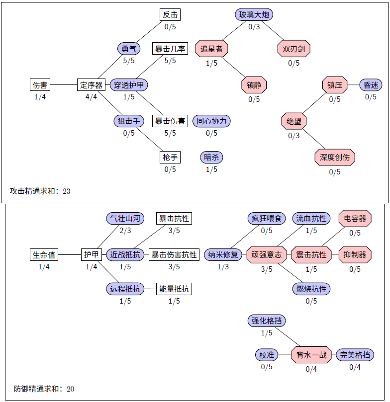

3 推荐配置
在网友的强烈要求下，作者基于自己对精通的理解写出以下一些配置，供参考。
百炼为战游戏的核心就是打输出结束战斗，所以玩家的共识都是在攻击方面投入更多的精通点。同时，根据每个人的队伍配置，会有一些变化。以下是供参考的一些精通配置，可做为模板进行调整。
在给自己配置的时候可以使用这个Excel模板来调整
3.1 进攻型（含纳米，注重流血）
主要的核心点在于防御精通中的纳米修复，如果你是千斤顶的玩家，这个精通是必开的，此时需要至少左边消耗10点才能开启，一般千斤顶的玩家都会开满3点，所以这套配置至少有13点在防御侧。
另外这套配置强调了深度创伤，这个精通对于流血型角色是极大的提升，可以大大提高战擎这种看似不靠流血吃饭型角色的输出，更不用说战士们了。但如果你不用流血型角色，这6点精通（包括绝望那1点）可以节省出来，开一点暗杀，把狙击手、枪手和反击都点上。或者你对连招更感兴趣的话，可以把追星者点高。

进攻型（含纳米，注重流血）
3.2 进攻型（注重眩晕）
除了流血外，眩晕（尤其是连续眩晕对手）是很有意思的玩法，但仅限于战斗比较短，不在乎对方是否被打出S3的场合下。这方面横炮、喷气机、救护车都是个中好手。这里的关键是昏迷和抑制器两个精通，前者能给你更多的输出次数，便于多次攒出S技连续击晕，后者能在击晕的时候降低对方的能量功率，以防红得太快。

进攻型（注重眩晕）
3.3 平衡型（不含纳米与流血）
这种配置适合早期使用，各种DOT抗性都有一点，外加顽强意志的回血，方便在突袭中对付流血模块和碎骨魔等，但很快随着队伍战力的提升，你会发现DOT抗性和回血已经没有必要。

平衡型（不含纳米与流血）